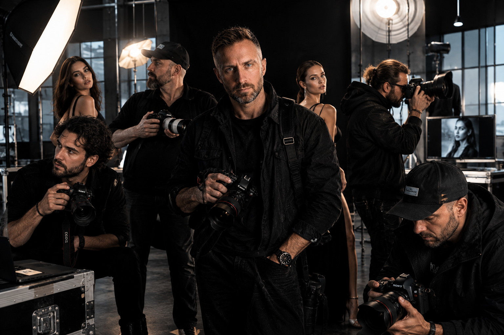
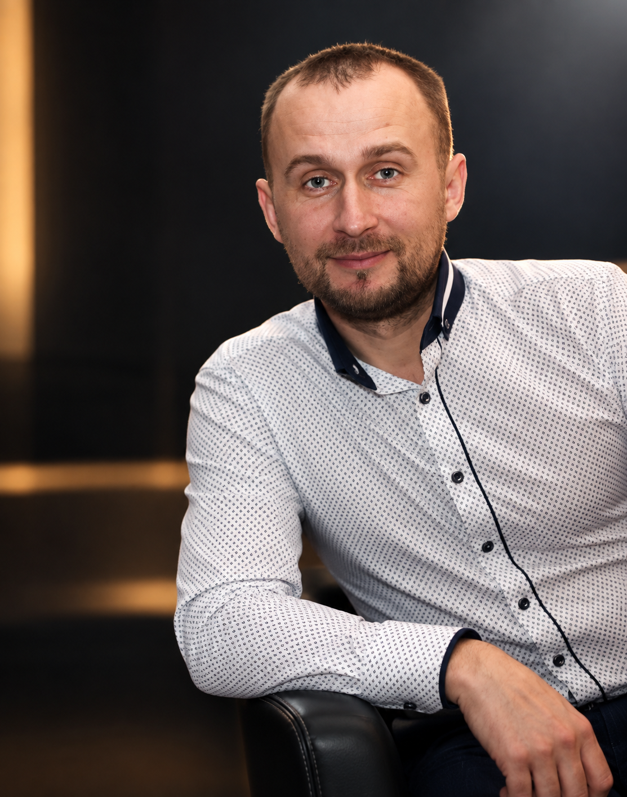

Привет!
Меня зовут Виталий.
Живу и работаю в Тбилиси, Грузия.
Я фотограф и человек, который любит настоящие эмоции, живые лица и истории, которые невозможно повторить.
Для меня фотография — это не просто красивый кадр. Это настроение, взгляд, характер, движение и тот самый момент, который через годы снова возвращает вас в сегодняшний день.
Фотография — это визуальная поэзия.
Один кадр может рассказать целую историю — если в нём есть человек, эмоция и настоящий момент.
«Моя цель — запечатлеть прекрасные промежуточные моменты, которые делают вашу историю такой особенной».
Мой подход
Я стараюсь сделать съёмку комфортной даже для тех, кто не привык находиться перед камерой. Вам не обязательно уметь позировать или знать, куда поставить руки. Я подскажу, как встать, куда посмотреть и как двигаться — всё остальное сделает камера и свет.
Мне хочется, чтобы после съёмки у вас остались не просто фотографии, а ощущение: «Да, это действительно я».
Настоящие люди. Настоящие эмоции. Настоящие истории.

Я фотографирую людей, эмоции и моменты, которые хочется сохранить.
Мне важны естественность, характер и свет. Я не стремлюсь просто сделать красивую фотографию — я хочу создать кадр, в котором человек узнаёт себя.
Сегодня продолжаю развивать свой стиль и создавать фотографии, которые остаются с человеком надолго.


Хотите увидеть себя на моих фотографиях?
Давайте создадим кадры, которые останутся с вами надолго.
О себе...
Виталий Быстров родился в 1984 году в деревне Слобода Березинского района Минской области, Беларусь.
После окончания средней школы получил образование в мелиоративном колледже. Работал в дорожно-ремонтно-строительном учреждении №192 города Березино машинистом асфальтоукладчика.
Проходил срочную службу в Вооружённых Силах Республики Беларусь, в танковых войсках, воинская часть 32377, город Борисов.
После службы связал свою профессиональную жизнь с творчеством.
Длительное время работал в Белыничском районном центре культуры Могилёвской области звукооператором и вокалистом. Принимал участие в фестивалях, концертах, конкурсах и других культурно-просветительских мероприятиях, неоднократно отмечался благодарственными письмами и грамотами.
Позже поступил в Могилёвский Государственный Колледж Искусств имени В. Крупской, который окончил с отличием.
Вернувшись в родной город Березино, продолжил творческую деятельность и работу в сфере культуры, где приобрёл профессиональный опыт, признание и известность среди жителей города.

Творческий путь.
Беларусь — моя малая родина, мой родительский дом и начало моего творческого пути. Здесь я жил и работал, пробовал себя в разных профессиях и направлениях.
Но особое место в моей жизни всегда занимало творчество.
Я много лет был связан со сферой культуры родного города Березино и участвовал в различных творческих проектах. Работал звукооператором и вокалистом, помогал создавать атмосферу концертов, мероприятий и культурных программ.

Опыт.
Отдельной частью этого опыта стала работа на свадьбах, корпоративах и различных торжествах в кафе и ресторанах. Общение с людьми, сцена, музыка, свет, эмоции и атмосфера мероприятий научили меня чувствовать момент и замечать детали.

TAIGA SONG CONTEST – 2023
«Житель нашего города, работник сферы культуры Виталий Быстров занял 3-е призовое место в международном вокальном конкурсе «TAIGA SONG CONTEST – 2023» (Германия), который проходил на платформе TikTok.»
Из архива газеты «Березинская панорама».

Изменения в жизни.
Новая глава
В 2025 году моя жизнь изменилась — я переехал из Беларуси в Грузию.
Новый город, новая страна, новые люди и совершенно другая атмосфера стали для меня началом нового этапа.
Тбилиси постепенно стал местом, где я продолжаю развиваться, заниматься фотографией, знакомиться с людьми и создавать новые истории через объектив.
Переезд — это всегда выход из привычного. Но иногда именно перемены открывают дорогу к тому, о чём раньше только мечтал.
Беларусь остаётся моей родиной и важной частью моей истории.

«Музыка научила меня чувствовать эмоцию.
Сцена — видеть человека.
А фотография —позволяет сохранить всё это в одном кадре...»
В настоящее время...
Я фотограф, для которого фотография — это способ сохранить эмоции, людей и моменты, которые со временем становятся частью нашей истории.
Я снимаю портреты, семейные и повседневные истории, лайфстайл, студийные и творческие проекты. Мне интересно находить индивидуальность человека и показывать её через свет, композицию и настроение кадра.
В работе я ценю естественность, внимание к деталям и профессиональный подход. Мне важно, чтобы фотография оставалась красивой, но при этом настоящей.

FASHION WEEK MODELS
Модели, подиум и несколько секунд, в которых рождается образ.
Показ мод — это не просто выход модели на подиум. За каждым появлением стоят часы подготовки, работа стилистов, визажистов, дизайнеров и команды, которая создаёт атмосферу показа.
Но именно модель становится тем человеком, который на несколько минут превращает одежду в историю.
Походка, взгляд, поворот головы, движение ткани, свет софитов — всё происходит очень быстро. Для фотографа это особый момент: нужно поймать кадр, в котором соединяются образ, характер и настроение.
FASHION — это не только одежда. Это образ, движение и человек, который превращает их в историю.


PORTRAITS
Portrait Photography in Tbilisi
Портрет для меня — это не только внешность человека. Это характер, настроение и эмоция, которые остаются в одном кадре.


STREET PHOTOS
«Мой любимый жанр — стрит-фото: настоящие люди, настоящие эмоции, настоящий момент»


LANDSCAPE
СИЛА ПРИРОДЫ.
Грузия — страна удивительной природы, древней истории и особенной атмосферы. Величественные горы, реки и озёра, старинные города, храмы и места, наполненные историей, создают неповторимый образ этой страны.
Я стараюсь сохранять эти мгновения в своих фотографиях и показывать Грузию такой, какой её чувствую: красивой, живой и настоящей.